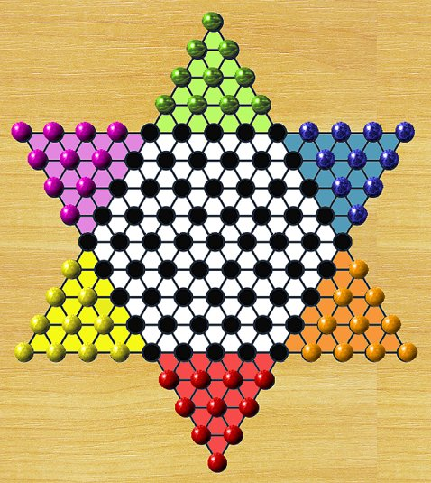

In traditional Chinese Checkers, you must move your marbles into the opposite goal triangle before your opponents fill theirs. You win as soon as the opposite triangle is completely filled with marbles of your colour. To prevent players from blocking the goal, a forward out-jump towards the centre becomes mandatory whenever an enemy marble is adjacent to one of your marbles still inside your home zone. Sideways or backward out-jumps do not occur. Players may not move into any opponent’s goal areas (except their own home triangle).
In alternative variants, a jump towards your goal becomes mandatory whenever an enemy marble occupies the space directly in front of your own. This extends the standard out-jump rule and helps prevent congestion. For Red, the forced jump is in the NW or NE directions. For Yellow, it is in the NE or E directions, and so on for the other colours. This could be a significant improvement. The rule only applies at the beginning of a jump sequence.
Players alternate turns, moving one marble at a time. A marble can step to an adjacent empty space or it may jump over an adjacent marble, of either colour, into the empty space directly on the opposite side. A marble may continue jumping as long as possible, or the player may choose to stop early. No marbles are ever captured in Chinese Checkers. Despite its name, Chinese Checkers has no historical connection to China. The game is a variation of the 19th-century board game Halma and entered the commercial market in the 1930s.
It is much faster to advance by chaining a series of jumps than by sliding your marbles forward one space at a time. The most effective strategy is to arrange your marbles in long, continuous sequences that can be jumped over, creating a kind of bridge toward the opposite side. Just be careful that your opponent doesn’t end up using these bridges more effectively than you do.
• You can download my free Traditional Chinese Checkers program here (updated 2026-03-27), but you must own the software Zillions of Games to be able to run it (I recommend the download version).
• See also Chinese Checkers (The Diamond Game).
© M. Winther, 2026 March